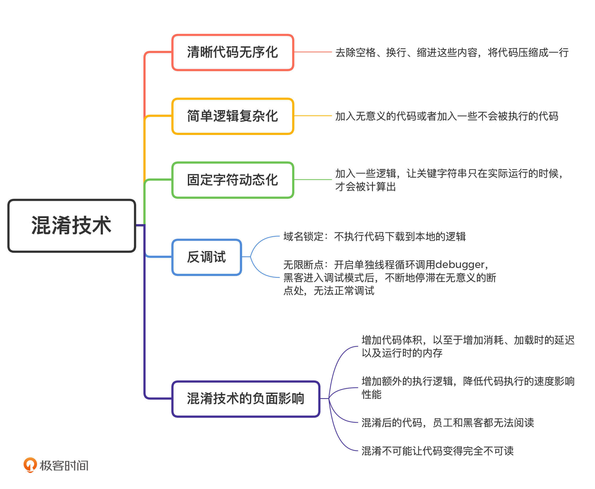

- 00 开篇词 别说你没被安全困扰过.md.html
- 01 安全的本质：数据被窃取后，你能意识到问题来源吗？.md.html
- 02 安全原则：我们应该如何上手解决安全问题？.md.html
- 03 密码学基础：如何让你的密码变得“不可见”？.md.html
- 04 身份认证：除了账号密码，我们还能怎么做身份认证？.md.html
- 05 访问控制：如何选取一个合适的数据保护方案？.md.html
- 06 XSS：当你“被发送”了一条微博时，到底发生了什么？.md.html
- 07 SQL注入：明明设置了强密码，为什么还会被别人登录？.md.html
- 08 CSRF_SSRF：为什么避免了XSS，还是“被发送”了一条微博？.md.html
- 09 反序列化漏洞：使用了编译型语言，为什么还是会被注入？.md.html
- 10 信息泄露：为什么黑客会知道你的代码逻辑？.md.html
- 11 插件漏洞：我的代码看起来很安全，为什么还会出现漏洞？.md.html
- 13 Linux系统安全：多人共用服务器，如何防止别人干“坏事”？.md.html
- 14 网络安全：和别人共用Wi-Fi时，你的信息会被窃取吗？.md.html
- 15 Docker安全：在虚拟的环境中，就不用考虑安全了吗？.md.html
- 16 数据库安全：数据库中的数据是如何被黑客拖取的？.md.html
- 17 分布式安全：上百个分布式节点，不会出现“内奸”吗？.md.html
- 18 安全标准和框架：怎样依“葫芦”画出好“瓢”？.md.html
- 19 防火墙：如何和黑客“划清界限”？.md.html
- 20 WAF：如何为漏洞百出的Web应用保驾护航？.md.html
- 21 IDS：当黑客绕过了防火墙，你该如何发现？.md.html
- 22 RASP：写规则写得烦了？尝试一下更底层的IDS.md.html
- 23 SIEM：一个人管理好几个安全工具，如何高效运营？.md.html
- 24 SDL：怎样才能写出更“安全”的代码？.md.html
- 25 业务安全体系：对比基础安全，业务安全有哪些不同？.md.html
- 26 产品安全方案：如何降低业务对黑灰产的诱惑？.md.html
- 27 风控系统：如何从海量业务数据中，挖掘黑灰产？.md.html
- 28 机器学习：如何教会机器识别黑灰产？.md.html
- 29 设备指纹：面对各种虚拟设备，如何进行对抗？.md.html
- 30 安全运营：“黑灰产”打了又来，如何正确处置？.md.html
- 加餐1 数据安全：如何防止内部员工泄露商业机密？.md.html
- 加餐2 前端安全：如何打造一个可信的前端环境？.md.html
- 加餐3 职业发展：应聘安全工程师，我需要注意什么？.md.html
- 加餐4 个人成长：学习安全，哪些资源我必须要知道？.md.html
- 加餐5 安全新技术：IoT、IPv6、区块链中的安全新问题.md.html
- 模块串讲（一）Web安全：如何评估用户数据和资产数据面临的威胁？.md.html
- 模块串讲（三）安全防御工具：如何选择和规划公司的安全防御体系？.md.html
- 模块串讲（二）Linux系统和应用安全：如何大范围提高平台安全性？.md.html
- 结束语 在与黑客的战役中，我们都是盟友！.md.html
- 捐赠
加餐2 前端安全：如何打造一个可信的前端环境？
你好，我是何为舟，欢迎来到安全专栏的第二次加餐时间。
前端的安全性一直是我们在考虑安全问题时，没有办法绕过的关键问题。今天，我就来和你聊一聊如何保护前端的安全性。
我们先来看一个攻击事件。2017年，12306网站被曝出有“买下铺”的功能。我们都有过买票的经历，当我们在12306上买卧铺的时候，是没法选择上铺、中铺还是下铺的。但是，有人去分析了12306的前端代码，发现里面其实包含了选铺位的功能，只是默认为随机，没有展示出来。所以，有人通过篡改前端代码，就将这个功能开放出来了。- - 一旦黑客能够完全摸清楚应用的前端代码，就能够任意地篡改前端的逻辑，实现带有想要功能的前端应用了。
如果说12306的例子，还不足以让你对前端安全产生警惕的话，你可以想一想，我们在网上看到的各种所谓的“破解版”软件，其实都是人为修改了应用的前端认证功能，从而不需要认证就可以正常使用。
除了篡改前端代码，黑客还可以通过对前后端接口的调用过程进行分析，复刻出一个自己的前端应用。在黑客复刻的前端应用中，所有的接口认证和加密都合法，只是调用的顺序完全由黑客掌控。粉丝圈比较流行的各类明星应援工具，其实都是基于这个原理实现的：黑客通过分析微博客户端的接口，自己打包了一个前端应用，实现了一键关注、点赞等功能。因为这些接口都是合法的，所以后端人员很难分辨出这些请求是来自于正规的应用，还是黑客自己实现的应用。
针对前端的攻击可以说是“防不胜防”，这让后端没有办法信任前端的环境，甚至没有办法信任前端发起的请求和上传的数据，极大地影响了公司和应用的正常发展。那么，我们应该通过什么方法来保障前端的可信呢？
什么是混淆技术？
要解决这个问题，我们可以先想一下黑客攻击前端的过程：黑客通过分析前端代码，来篡改前端逻辑，实现带有想要功能的前端应用。那有没有一种方法，无法让黑客在前端代码中分析出有效信息呢？答案就是混淆。
在理想状态下，我们混淆了前端代码之后，不仅能让黑客无法篡改前端代码，还能保证即使黑客成功篡改代码，那么篡改后的前端代码依然不可用。同时，黑客无法获得前端的接口密钥和签名等信息，也就无法伪造正常的前端应用去发起请求了。
我们知道，安全中通常不存在理想状态。我们最需要做的，就是不断地升级对抗，来接近这个理想的目标。
刚才我们说的是混淆技术可以实现的结果，那混淆技术究竟是什么呢？在不同的语言和环境（如：Android 、iOS和Web）中，混淆技术都是相对独立的。尽管混淆技术相对独立，但我还是希望，你可以通过理解一门语言的混淆技术和思路，做到“一通百通”。我也希望能够更好地启发你去思考，如何去做好前端安全。接下来，我就以JavaScript为例，带你梳理混淆的常见技术和思路。
1.清晰代码无序化
在实际工作中，开发人员总是会要求自己写出清晰简洁的代码。但是，这也为黑客的代码分析提供了便利。因此，混淆的第一步，一定是想办法让我们的JavaScript代码变得“难看”，也就是将整洁的代码变得无序。
有什么办法能让代码变得“难看”呢？我这里通过一个例子来具体解释一下，你就能明白了。
我们先来看一段代码。
function obfuscate() {
console.log("I'm obfuscator!");
}
obfuscate();
我们一眼就能够看出这段代码的逻辑：有一个obfucate方法，这个方法会打出一行日志，日志内容为“I’m obfuscator!”。
在JavaScript中，空格、换行、缩进这些内容，只是为了让代码看起来更清晰。所以，这些对代码没有影响，只是便于开发人员查看的内容，完全可以去除。这样一来，这段代码我们就可以改成下面这样：
function obfuscate(){console['log']('I'm obfuscator!');}obfuscate();
把代码压缩成一行后，黑客想要阅读就已经比较吃力。在此基础上，我们还可以让它变得更“难看”。实际上，JavaScript中的方法名和变量名也不影响逻辑执行，只是开发人员用来表示方法和变量的含义，完全可以用没有意义的随机字符替代。随机字符代替后的效果如下：
function _0xc648a(){console['log']('I\x27m\x20obfuscator!');}_0xc648a();
2.简单逻辑复杂化
对于上面这段无序化后的代码，只要黑客稍微花点心思去阅读，再配合一些JavaScript格式化的工具，也能够弄明白它的逻辑。归根结底还是因为这段代码“太简单了”。那么，我们是不是能够让原本简单的代码变得复杂呢？实现方法有很多种，我们先来看最简单的一种：加入无意义的代码。
我们还是以最开始的简单代码为例。为了方便你查看，我把前面那段简单代码重新贴在这里。
function obfuscate() {
console.log("I'm obfuscator!");
}
obfuscate();
在这段代码中，本来输出的日志就是一个固定的字符串“I’m obfuscator!”。但是，我们可以先将这段字符串放在一个字典中，然后再通过字典去获取字符串。修改后的效果如下：
function obfuscate() {
var _0x16df9a = { 'HXGCi': 'I\x27m\x20obfuscator!' };
console['log'](_0x16df9a['HXGCi']);
}
obfuscate();
这就是通过字典等形式，将常量变成变量的混淆方法。在此基础上，我们还可以加入一些无意义的switch、if和while语句，进一步将代码复杂化。
除了加入一些无意义的代码，我们还可以加入一些不会被执行的代码，让混淆的结果更有威慑力。比如下面这段代码：
(function (_0x2177d9, _0x1442cc) {
var _0xb84613 = function (_0x5a2b5f) {
while (--_0x5a2b5f) {
_0x2177d9['push'](_0x2177d9['shift']());
}
};
_0xb84613(++_0x1442cc);
}(_0x1808, 0x1ea));
function obfuscate() {
console['log']('I\x27m\x20obfuscator!');
}
obfuscate();
在这段代码中，中间的function (_0x2177d9, _0x1442cc)就不会被执行，它的目的仅仅是让代码看起来更复杂而已。
3.固定字符动态化
在我们前面说的这几个混淆代码的例子中，关键字符串“I’m obfuscator!”始终都存在。如果黑客关心的只是这个字符串，那它通过搜索就可以很快定位到。也就是说，通过前面几种方式混淆的前端代码，其中的接口、密钥和签名等信息，黑客还是很容易就可以获取到。
既然关键字符串“存在”于代码中就不安全，那有没有方法可以让关键字符串“消失”呢？我们可以通过加入一些逻辑，让这些关键字符串只有在实际运行的时候，才会被计算出来。
最简单、最直接的思路就是，我们可以将关键字符串改成多个字符串拼接的形式。效果如下：
function obfuscate() {
console['log']('I\x27m\x20o' + 'bfusc' + 'ator!');
}
obfuscate();
通过这样改写的方式，黑客就没有办法通过搜索功能，找到“I’m obfuscator!”的位置了。
但是，这种简单分割字符串的方式很容易被发现。所以，我们可以将这些字符串从它原本的位置拿出来，通过更复杂的方法（如：数组的引用、方法的调用等）来获取。效果如下：
var _0x5e96 = [
'bfusc',
'ator!',
'log',
'I\x27m\x20o'
];
(function (_0x520fe6, _0x366376) {
var _0x38fe5f = function (_0x456d44) {
while (--_0x456d44) {
_0x520fe6['push'](_0x520fe6['shift']());
}
};
_0x38fe5f(++_0x366376);
}(_0x5e96, 0x15e));
var _0x40ca = function (_0x520fe6, _0x366376) {
_0x520fe6 = _0x520fe6 - 0x0;
var _0x38fe5f = _0x5e96[_0x520fe6];
return _0x38fe5f;
};
function obfuscate() {
console[_0x40ca('0x0')](_0x40ca('0x1') + _0x40ca('0x2') + _0x40ca('0x3'));
}
obfuscate();
这样一来，黑客想要快速找到_0x40ca(‘0x1’)具体指什么，就需要花上一番功夫了。
4.反调试
前面3种技术都是直接对源码进行混淆。但是，大多数情况下，黑客在分析代码的时候，不是直接阅读源码，而是通过调试的方法在JavaScript代码运行过程中，获取实际的代码执行方向以及变量的值。因此，为了保护前端安全，我们要采用反调试技术。在JavaScript中，主要有两种方法可以对抗调试：域名锁定和无限断点。下面，我们一一来看。
第一种是域名锁定。
当黑客来想要分析一个网页的时候，通常会将代码下载下来放到本地运行。但是，我们更希望这个分析过程仍然发生在当前的域名下，这样我们就能够通过请求去分析黑客到底干了什么。因此，我们可以在JavaScript中加入一段域名判断的逻辑。这样一来，当JavaScript运行的环境是localhost（本地主机）域名，或者其他未知的域名时，JavaScript就会产生错误，黑客就无法正常运行下载后的JavaScript文件了。
我来举个例子。在JavaScript中，我们可以通过window.location.host获取当前域名，然后判断这个域名是否等于网站的域名，比如server.com。如果不等于的话， 说明JavaScript不是通过正常访问域名的形式执行的。因此，JavaScript会直接返回，不执行后续的逻辑。代码如下：
function obfuscate() {
if(window.location.host != 'server.com'){
return;
}
console.log("I'm obfuscator!");
}
obfuscate();
第二种是无线断点。
在调式技术中，我们最常用到的功能就是断点。通过设置断点，我们可以让程序停留在某一个代码或者指令上，方便查看停留的这个时刻中各个变量的具体值是什么。
在JavaScript中，debugger指令就是用来添加断点的。所以，在反调试的时候，我们可以在JavaScript中开启一个单独的线程，来循环调用debugger。这样一来，如果黑客进入到调试模式，就会不断地停滞在无意义的断点处，从而无法正常调试。在正常运行JavaScript的时候，debugger不会生效，也就不会影响用户的正常使用。
除此之外，针对提供了额外的JavaScript接口的浏览器（比如Chrome），我们可以通过在JavaScript中检测开发者工具是否开启等特征，来实现反调试。开发者工具是开发人员在调试过程中必须使用的工具，一旦开启，基本就代表已经进入调试状态了。因此，我们可以在检测到开发者工具开启的时候，不去执行正常的JavaScript逻辑，这样就能够起到反调试的作用了。
好了，说完了这4种混淆技术，我要提醒你一点。这些混淆技术不是独立使用的，而应该是组合使用的。完整的混淆流程应该是这样的：首先，我们可以在原有的JavaScript代码中加入反调试的逻辑，然后通过简单逻辑复杂化和固定字符动态化的方法，隐藏原有的逻辑和反调试的逻辑。最后，通过清晰代码无序化，将所有的额外信息进行剔除，最终将代码变成了压缩成一行的JavaScript文件。
混淆技术有什么负面影响？
尽管混淆技术是保护前端安全的重要技术，但混淆技术改变了前端代码，就不可避免会影响前端的功能。这也是混淆始终达不到理想状态的一个主要原因。对于JavaScript的混淆来说，它的负面影响主要包括三个方面：增加体积、影响性能和无法分析报错。
混淆带来的最直接影响就是增加代码体积。在固定字符动态化的例子中，原本简单的4行代码经过混淆之后，变成了几十行。如果应用更复杂一些，一个几KB的JavaScript文件经过混淆之后变成几百KB，也是很正常的事情。这样一来，用户网络加载一个大型的JavaScript文件，所面对的消耗、加载时的延迟以及运行时的内存等都会有明显增长。
除了增加代码体积以外，混淆还会增加额外的执行逻辑，降低代码执行的速度影响性能。比如说，console.log本来只是一个简单的指令，但是在混淆之后，JavaScript需要对它进行数据的取值、索引的计算以及字符串的拼接等操作。这样一来，混淆后的代码执行速度必然会下降。
而且这些无用的操作，事实上是可以无限添加的。因此，在混淆的时候，如何把控复杂化的程度，是我们需要谨慎考量和测试的。
还有一点是不可避免的，那就是混淆后的代码，不仅黑客无法阅读，你其实也无法阅读。在混淆之前，如果前端出现错误，我们可以直接通过错误信息定位错误；但是在混淆之后，错误信息会变得“很难看”，而且代码只会剩下一行，我们也就无法定位了。
你还需要注意一点：混淆不可能让代码变得完全不可读。因为你的代码最终需要执行在用户终端，而执行的条件就是终端能够读懂代码。以JavaScript为例，黑客完全可以自己定义一个浏览器来执行JavaScript代码。这样一来，尽管黑客没办法直接阅读JavaScript文件，但仍然可以通过浏览器执行的指令集和内存环境来进行分析。
总结
好了，今天的加餐就到这里。
我们主要以JavaScript为例，梳理了混淆的主要技术和思路。虽然通过混淆，我们能大大增加黑客分析前端代码的难度，但是，混淆同样会给我们的正常工作和应用的执行增加难度，带来负面影响。所以，我们在使用混淆技术的时候，必须要经过谨慎的考量和测试。- 
思考题
最后，还是给你留一道思考题。
我们知道，不同的语言和环境，其混淆的技术和思路都存在各自的特点。你可以试着分析一下，在你熟悉的语言和环境中，有哪些方式可以用来进行代码混淆？
欢迎留言和我分享你的思考和疑惑，也欢迎你把文章分享给你的朋友。我们下一讲再见！
© 2019 - 2023 Liangliang Lee. Powered by gin and hexo-theme-book.